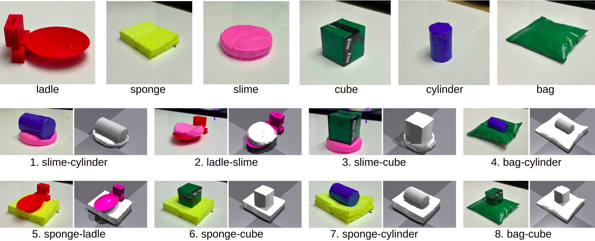

Method
We propose a Bayesian optimization method to improve the estimation of object material properties from observations, leveraging scene-specific parameters and partial reward evaluations for faster and more efficient optimization.
.png)
Robots need to estimate the material and dynamic properties of objects from observations in order to simulate them accurately. We present a Bayesian optimization approach to identify the material property parameters of objects based on a set of observations. Our focus is on estimating these properties based on observations of scenes with different sets of interacting objects. We propose an approach that exploits the structure of the reward function by modeling the reward for each observation separately and using only the parameters of the objects in that scene as inputs. The resulting lower dimensional models generalize better over the parameter space, which in turn results in a faster optimization. To speed up the optimization process further and reduce the number of simulation runs needed to find good parameter values, we also propose partial evaluations of the reward function, wherein the selected parameters are only evaluated on a subset of real-world evaluations. The approach was successfully evaluated on a set of scenes with a wide range of object interactions, and we showed that our method can effectively perform incremental learning without resetting the rewards of the gathered observations
We propose a Bayesian optimization method to improve the estimation of object material properties from observations, leveraging scene-specific parameters and partial reward evaluations for faster and more efficient optimization.
The dataset includes a wide range of deformable (sponge, slime, bag) and rigid objects (ladle, cube, cylinder) with different material properties.
@article{seker2024sumgp,
author = {M Yunus Seker, Oliver Kroemer},
title = {Estimating Material Properties of Interacting Objects Using Sum-GP-UCB},
journal = {2024 IEEE International Conference on Robotics and Automation (ICRA)},
year = {2024},
month = {May},
}